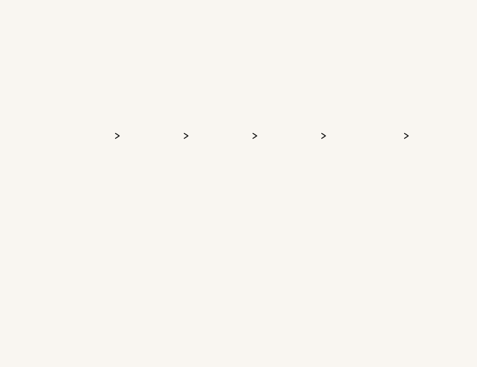

The inner loop is the thinking
A prompt enters the model, which reasons in hidden steps — parse, plan, solve, verify — before returning a single visible answer. If the result isn't good enough, it loops back and revises. That revise cycle is the algorithmic feedback loop: the model iterating on its own hidden chain-of-thought, sometimes exploring several lines of reasoning in parallel.
Algorithmic loop
The model's own revise cycle over its hidden reasoning — parse → plan → solve → verify, and back again until it's satisfied.
Human–machine loop
You read the answer, judge it, and refine the prompt — a second, outer loop that steers the whole system.
Why the compute runs away
Here's the catch. Every pass around the revise loop regenerates the entire hidden chain — and reasoning models often loop many times, in parallel. Because per-query energy scales with the tokens generated, the compute and energy compound fast: a hard query can cost tens of times a direct answer, while the visible reply barely changes. That's the counter climbing into the red at the top of the animation.
The upshot: more capability is real, but it isn't free — it's paid for in compute, energy, and ultimately emissions.
Chain-of-thought vs other approachesSee how it compares on capability, cost & energy